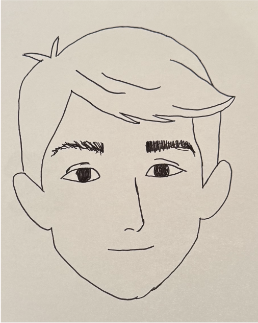

Persona 01
Sam
A junior from LA who has lived in Columbae for two years. In a co-op where everyone takes shifts cooking for the house, food became the daily proof of mutual care.
"A friend who has a midterm the next morning is baking bread for people just because they want to."
Needs A community of people he can trust to show up for one another.